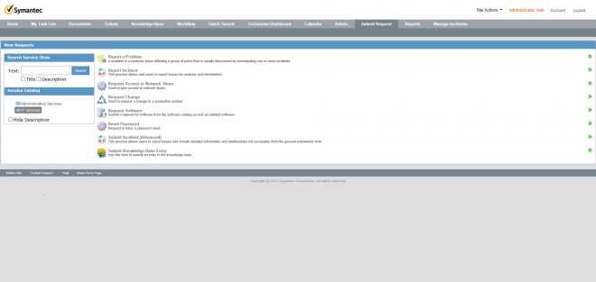
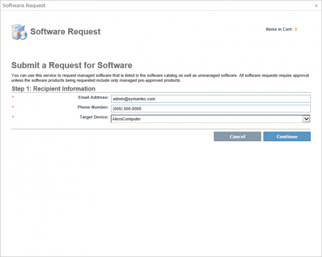
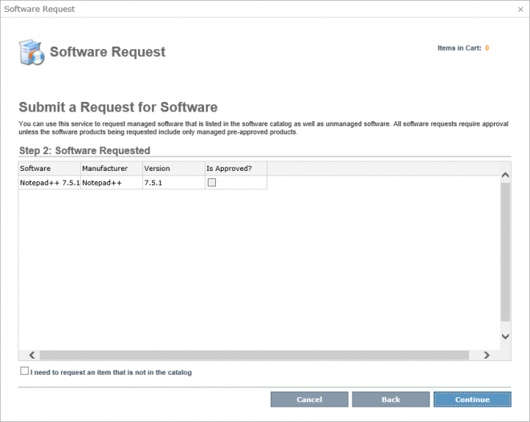
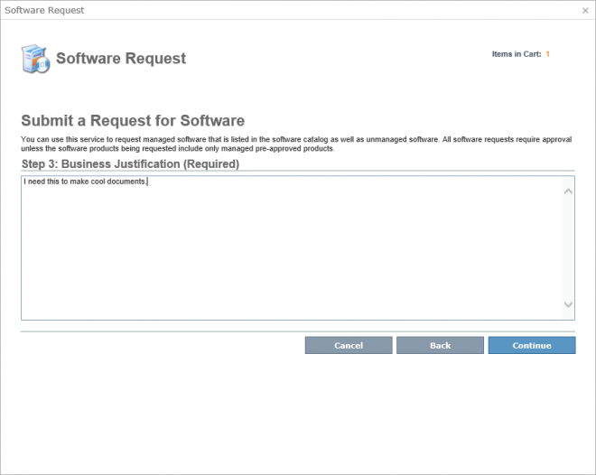
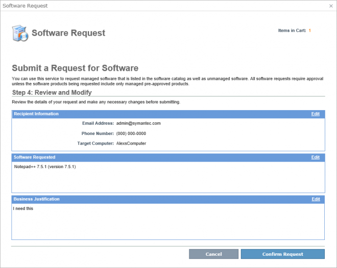
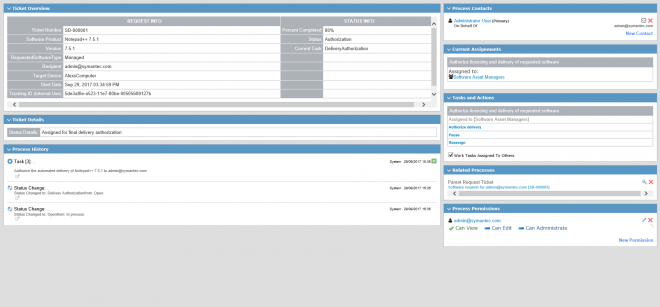
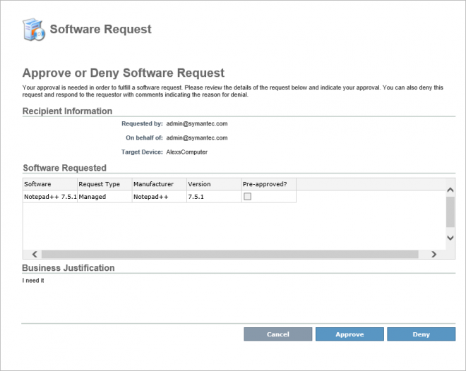
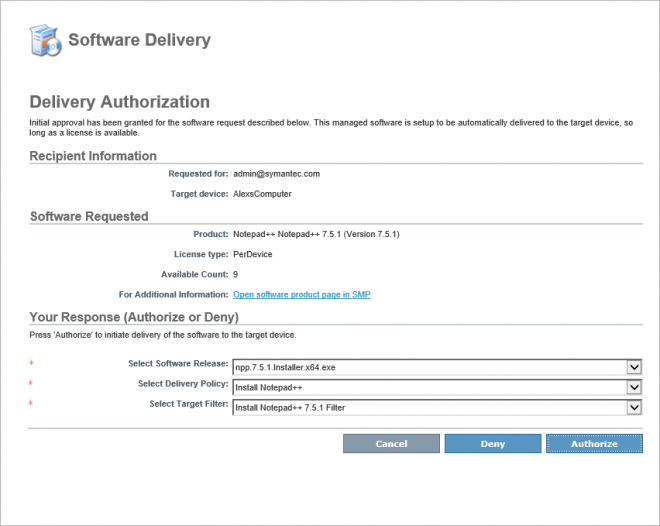
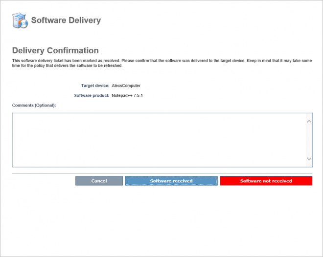

In this Article I'm going to explain how the new Software Request Process works in ServiceDesk 8.1.
Table Of Contents
This comes in the base install of SD 8.1 and can be viewed by going to the the 'Submit Request' page, under 'IT Services' then 'Software Request'.
You have to have AMS, CMS and Software Management Framework installed on the SMP. You have to define proper software products that are managed, deliverable and licensed
- product has a software release component.
- product has a software license associated. Delivery will be blocked by the workflow if a license is not available
- the release component is installable via a file and has a managed delivery policy.
- The policy is setup based on a target with a filter. delivery works by putting the device into the target's filter (inclusion list)
Firstly you need to configure a Managable and Deliverable piece of Software in your SMP.
| This will be an upcoming article [SMP] from @SamPace |
|---|
Login.
Manage | Software
Deliverable Software - Software Releases
You need to set up a Managed Delivery Policy which has a Target and corresponding Filter so an Asset can be added and have the software pushed.
Make sure to set Ownership of an Asset to the User you wish to test with.
Login to your Process Manager
Submit Request
Click on 'IT Services'
Then 'Request Software'

The logged in User has to be known by both the SMP and PM with the same Email address.
This will show a list of Owned Assets, choose one from the dropdown (Target Devices)
Enter a phonenumber.

Choose a piece of Software

You can request a piece of Software that isn't in the Catalog, this will create a Task for SAM team to complete.
Next give a Justification

Review

Confirm
You will then get a Ticket Number (SR-#)

Approvals
The Request will go into a Queue to be actioned.
1st Tier Approver - "Software Asset Managers"
[IMAGE] - Request PVP
The default logic is to go to the Requestor's Manager, if there isn't one fallback to the SAM.
This can be configured in the Rule Engine to any Group or any User.
Now action the Ticket using the Process Actions.
Click Approve.

This is pased to the Workflow Repsonse Queue to move to the next stage and create a Software Delivery Ticket (SDT)
Refresh the page after a few seconds.
Fulfilment phase
Expand Related Processes and open this new Ticket.
This is again assigned to the Software Asset Managers (SAM) Group.
Here you can Authorize Delivery using another Action as all the configuration has already been set up and has allowed the process to get to the Task: Delivery Authorization (80%).
Click on the Task
This shows the Licensing information and options to see it in the SMP via a link.

Here you can check and select the Release, Delivery Policy and Filter.
| Only support Filter based Targets. |
|---|
Click Authorize.
Check the SMP Filter to confirm it has been added.
[IMAGE]
The Request then returns to the Requestor to confirm the Software has been delivered.
Custom Notifications at each step can be configured and sent to relevant parties.
The User has an option to confirm/deny delivery.

A remediation task is created if the user states there has been a problem.
This task will loop back once an Analyst has checked, the user can then confirm again, this has a couple of days timeout.
Documentation
Symantec ServiceDesk 8.1 Documentation
https://www.symantec.com/connect/forums/symantec-servicedesk-81-documentation
- Release Notes - http://www.symantec.com/docs/DOC9618
| Feature | Description |
|---|---|
| Added Software request process | From this release onwards, you can create Software delivery requests, manage these requests and deliver software to the client computers using computer filters. |